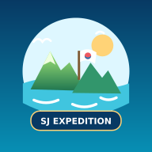

승주 원정대를 앱으로
설치한 아이콘으로 실행하면 주소창 없이 원정대를 이용할 수 있어요.
아래에서 휴대폰에 맞는 설치 방법을 확인하세요.
갤럭시·안드로이드
- 크롬에서 이 사이트를 여세요.
- 위 설치 버튼 또는 크롬 메뉴 ⋮ → ‘홈 화면에 추가’ → ‘설치’를 선택하세요. 기기에 따라 ‘앱 설치’로 표시돼요.
- 홈 화면의 승주 원정대 그림 아이콘을 누르세요.
아이폰
- 사파리에서 이 사이트를 여세요.
- 공유 → ‘홈 화면에 추가’를 누르세요.
- ‘웹 앱으로 열기’가 보이면 켜고 추가하세요.
N 아이콘이 남아 있다면
기존 N 바로가기를 삭제하고 새로 설치하세요. 사이트 데이터나 학생 기록을 지울 필요는 없습니다.
카카오톡·네이버 안의 브라우저라면 크롬 또는 사파리로 열어주세요. 설치 후에도 인터넷 연결이 필요합니다.